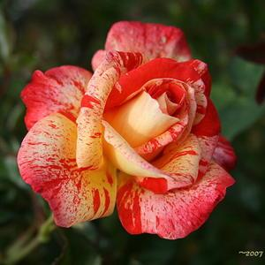

wild (wild) Roses
Species roses are typically large climbing or shrub-like roses with single, flat flowers blooming in late spring or early summer followed by hips (seeds) in autumn.
They are the parents of the modern roses we have today.
Wild roses tend to stir one’s thoughts towards Medieval times of knights, kings, queens, princes and princesses, as many of them date back well into our history.
The botanical term for them is “Species Roses.” Though this term does not conjure up the same emotions, it is the classification where you will find them listed or placed for sale in rose catalogs and nurseries.
Read more at Gardening Know How: Growing Wild Roses: How To Grow Wild Rose Plants
| Alternative cultivar names: |
 |
| 'Mister Lincoln |
'Mr. Lincoln' |
| asic information |
| Bloom size: |
Very large: 6" or more |
| Petal count: |
full: 26-40 petals |
| Rose bloom color: |
Dark red |
| Class: |
Hybrid tea
|
| more articles: |
From garden.org
From gardenia.net
|